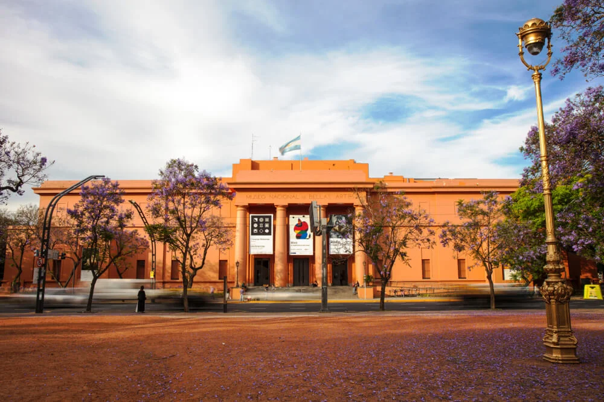
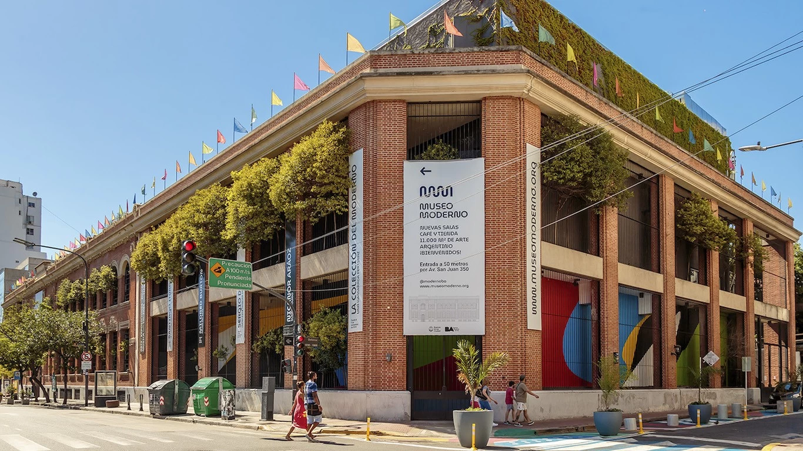
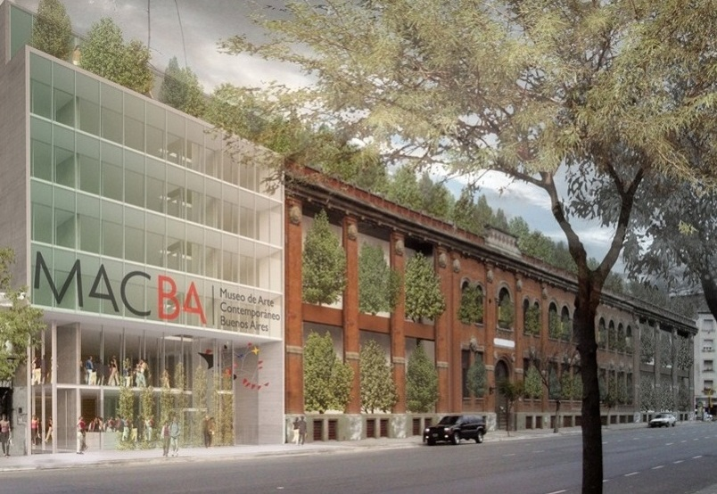

¿Qué museos visitar en la ciudad?
Buenos Aires es una de las ciudades más ricas de Sudamérica culturalmente hablando y gran parte de ésto, se debe a la gran variedad de museos y centros culturales que tiene. Y lo mejor de todo es que la mayoría de ellos son gratuitos, y los que no, tienen entradas muy económicas.
Museo Nacional de Bellas Artes
"El Museo Nacional de Bellas Artes fue inaugurado en diciembre de 1896 en el edificio de las tiendas Bon Marché de la calle Florida, hoy Galerías Pacífico. Desde su origen, se planteó como un espacio destinado a albergar arte internacional de todos los períodos históricos, y a promover y consolidar un arte argentino por entonces incipiente." Más información en la página web del museo.
Horarios: martes a viernes, de 12:30 a 20:30 hs. Sábados, domingos y feriados, de 9:30 a 20:30 hs.
Ubicación:Av. del Libertador 1473, Buenos Aires
MALBA (Museo de Arte Latinoamericano de Buenos Aires)
_GettyImages-875493478.webp)
El MALBA alberga colecciones permanentes como así también temporarias, donde lo argentino y lo latinoamericano son protagonistas. Más que un museo, el MALBA es un espacio cultural dinámico y participativo en el que se presentan exposiciones temporales de diversa índole y se realizan también otro tipo de actividades, como por ejemplo, ciclos de cine. Más información en la página web del museo.
Horarios: Todos los días de 12 a 20 hs. Martes cerrado. Feriados: Abierto de 12:00 a 20:00, excepto los días martes.
Ubicación: Av. Pres. Figueroa Alcorta 3415, C1425CLA CABA
Museo de Arte Moderno
El edificio del museo es una construcción histórica que perteneció a la empresa tabacalera Nobleza Piccardo. El museo abrió sus puertas en el año 1956 como una idea del cítico de arte Rafael Squirru. Más información en la página web del museo.
Horarios: Lunes, miércoles, jueves y viernes de 11:00 a 19:00 hs. Sábados, domingos y feriados de 11:00 a 20:00 hs. Los martes el museo permanece cerrado.
Ubicación: Av. San Juan 350, C1147 AAO, Buenos Aires
MACBA (Museo de Arte Contemporáneo de Buenos Aires)
La educación no formal por medio del arte es uno de sus propósitos principales. Por medio de la exhibición de contenidos artísticos (objetos y relatos), el MACBA espera poder estimular el desarrollo de la creatividad en los artistas y los distintos públicos de la ciudad de Buenos Aires y del país, así como profundizar el conocimiento del arte argentino en el exterior.. Más información en la página web del museo.
Horarios: Lunes a viernes de 12:00 a 19:00. Sábados, domingos y feriados de 12:00 a 19:00. Martes cerrado.
Ubicación: Av. San Juan 328, C1141 CABA